⚠ Requirements — Before You Begin
Safety First! Always wear proper safety equipment before performing any electrical work. Never touch live wires without proper PPE.
Devices
- iPhone (12 or newer with LiDAR) — for 3D room scanning
- Android Phone — for KlimaShift Operations App (all other tasks)
- Multimeter — for finding MCB phase and checking voltage
Tools
- Tester — for checking live/neutral connections
- Screwdriver Set — for opening panel covers and terminals
- Wire Strippers — if needed for any wiring work
Safety Equipment (PPE)
- Safety Gloves — insulated rubber gloves for electrical work
- Safety Shoes — electrically insulated footwear
- Safety Goggles — eye protection from sparks or debris
- Hard Hat — head protection in industrial areas
- Insulated Mat — stand on while working on live panels
Documentation & Others
- Google Sheet Access — for recording audit data
- Site Access Permission — client authorization letter if required
- Notepad/Pen — for quick notes during audit
- Flashlight — for dark areas and panel inspection
Electrical Safety Rules:
- Never work on live panels without proper safety equipment
- Always inform site personnel before switching MCBs on/off
- Keep one hand in pocket when testing live circuits (avoid current path through heart)
- Disconnect power before opening panel covers if possible
- If unsure about any electrical work, consult a qualified electrician
A Part A — Client & Building Selection
Goal: Log into the KlimaShift Operations App, find the correct client and building, and start the audit.
Step 1 Open KlimaShift Operations App & Log In
Open the KlimaShift Operations App on your phone. Log in using your credentials. After successful login, the Clients page will open showing a list of all clients.
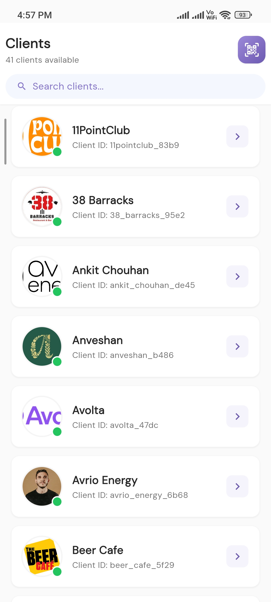
1.png — Clients page after login
Step 2 Search for the Client
Use the search bar at the top to search for the client name. Tap on the correct client from the results.
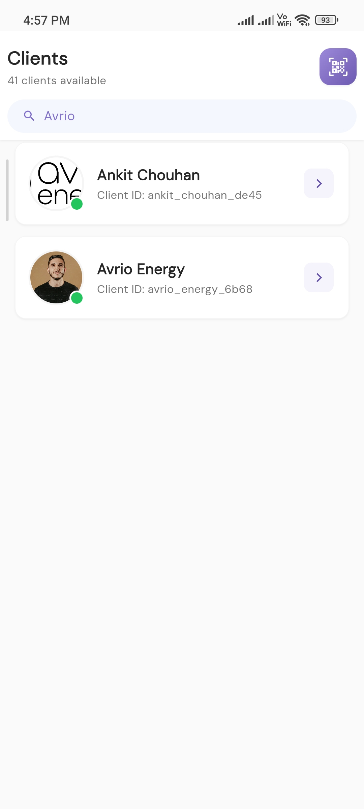
2.png — Search for client
Step 3 Search for the Building
After selecting the client, search for the building for which the audit needs to be performed. Tap on the correct building.
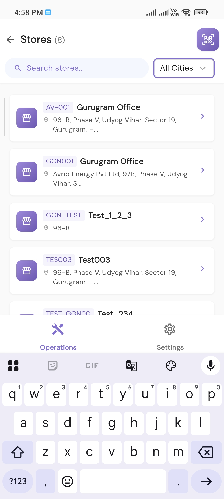
3.png — Search for the building
Step 4 Open Building Audit Progress
The building page will open. Tap on "Audit Progress" to view the audit status and begin the audit process.
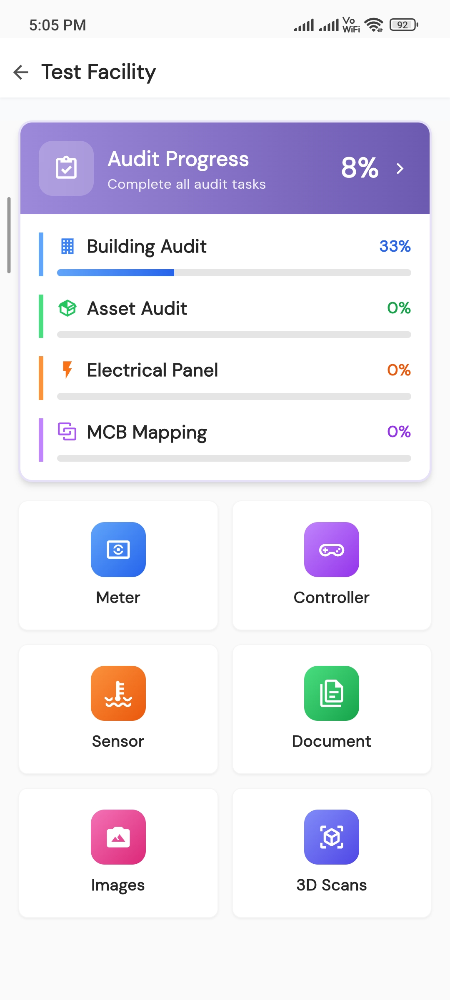
4.png — Tap on Audit Progress
Step 5 Start the Audit
Tap on "Start Audit" to begin the audit process.
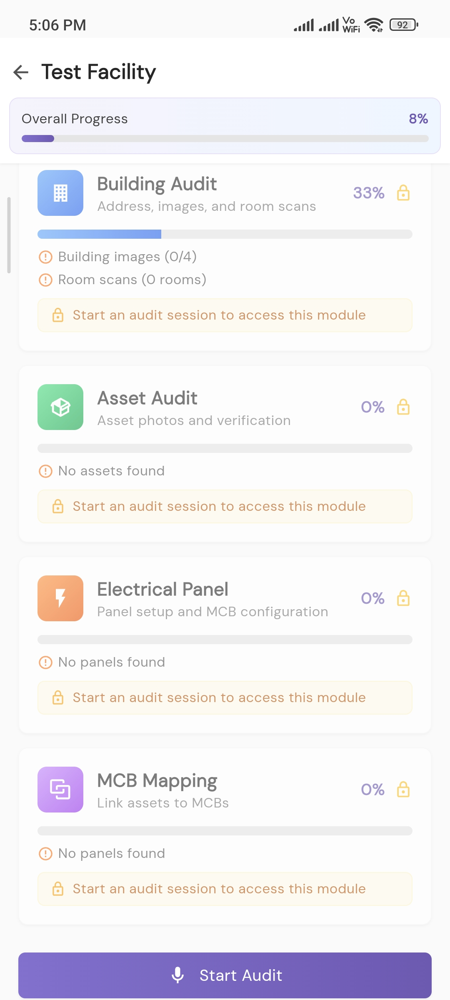
5.png — Tap on Start Audit
Step 6 Grant Audio Recording Permission
The app will request permission to record audio. This is required for voice notes during the audit. Tap "Allow" or "OK" to grant permission.
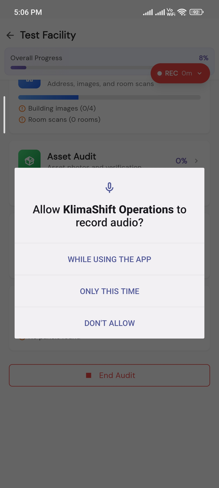
6.png — Grant audio recording permission
Step 7 Select Building Audit
Tap on "Building Audit" to proceed with the building-level audit.
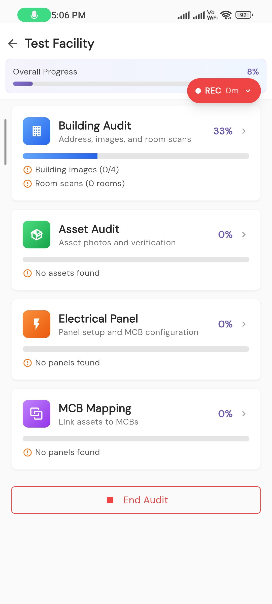
7.png — Tap on Building Audit
Step 8 Grant Approximate Location Permission
The app will request access to approximate location. This is needed to capture the building's GPS coordinates. Tap "Allow" or "Allow while using app".
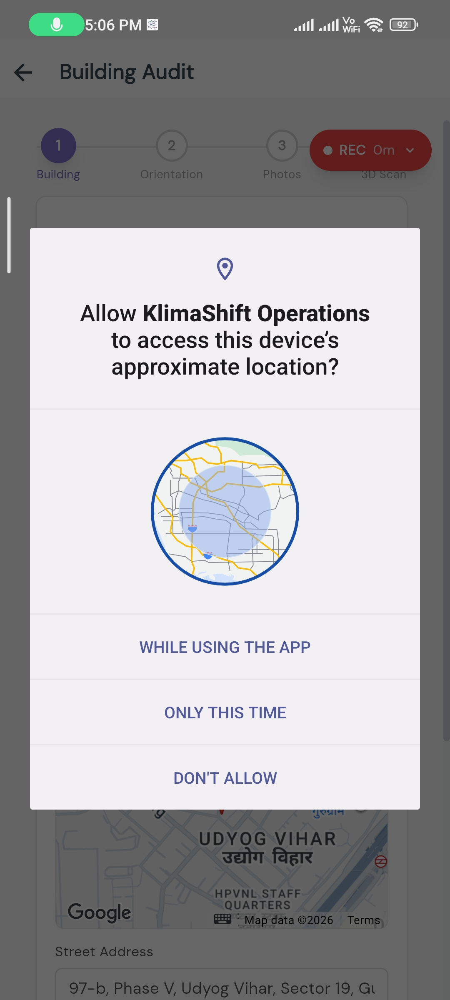
8.png — Grant location permission
B Part B — Building Details & Orientation
Step 9 Enter Building Details
The Building Audit page will open. Tap the pencil icon on the top right corner to edit building details. Enter/update:
- Building Name
- Floor Area (in sq ft or sq m)
- Building Type (Commercial, Residential, Industrial, etc.)
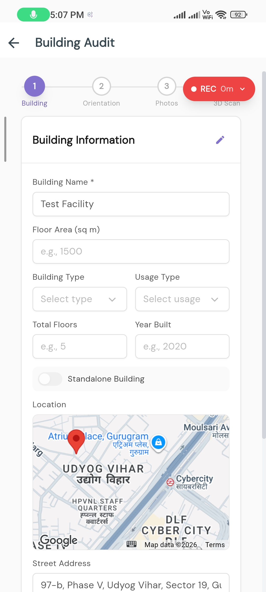
9.png — Enter building details (tap pencil icon)
Step 10 Update Location (if needed)
If the location needs to be updated, tap on the location section. The app will auto-fill location details (latitude, longitude, address) if location permissions are granted.
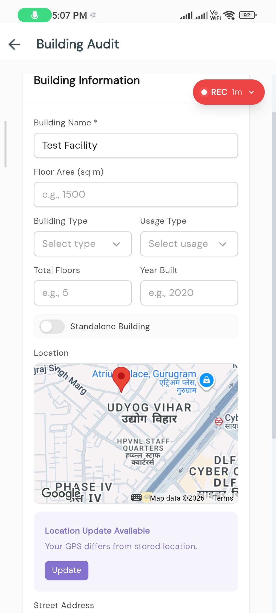
10.png — Auto-filled location details
Step 11 Save Changes
After entering all details, tap "Save Changes" to save the building information.
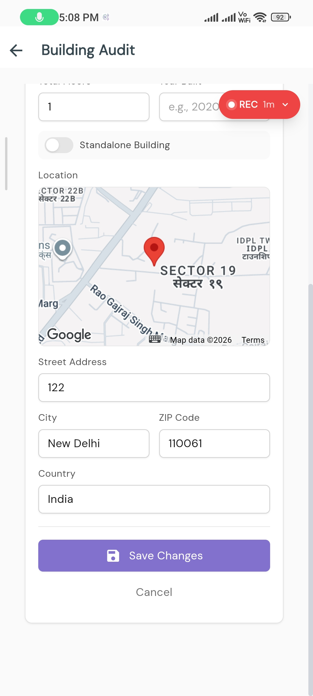
11.png — Tap on Save Changes
Step 12 Continue to Orientation
After saving, tap "Continue to Orientation" to proceed to the building orientation phase.
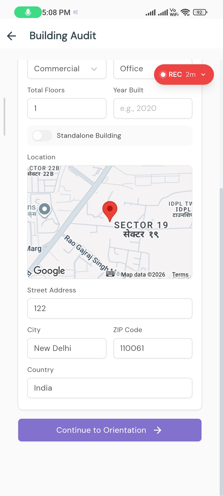
12.png — Tap on Continue to Orientation
C Part C — Store Front Photo
Goal: Capture the front photo of the store/site.
Step 13 Lock Front & Take Photo
Stand in front of the store, facing the entrance. Tap "Lock Front & Take Photo" to capture the store front.
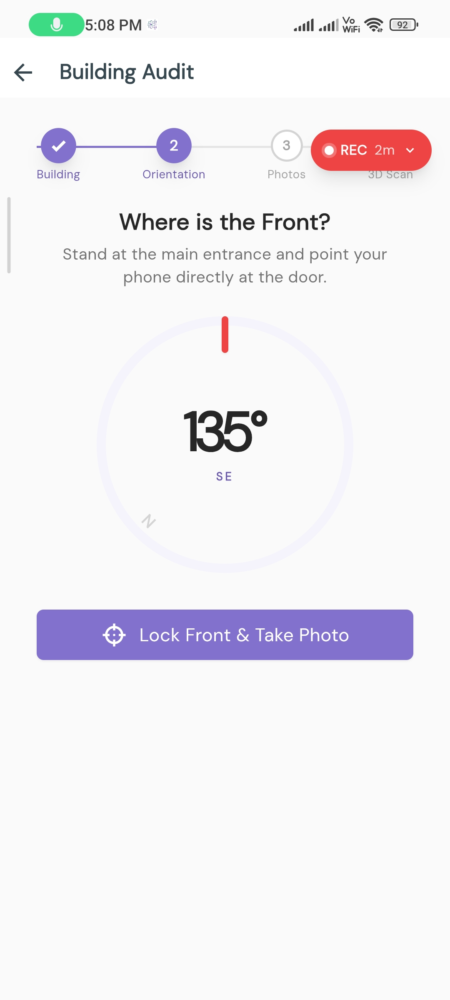
13.png — Tap on Lock Front & Take Photo
Step 14 Grant Camera Permission
The app will request permission to take pictures and videos. Tap "Allow" to grant camera access.
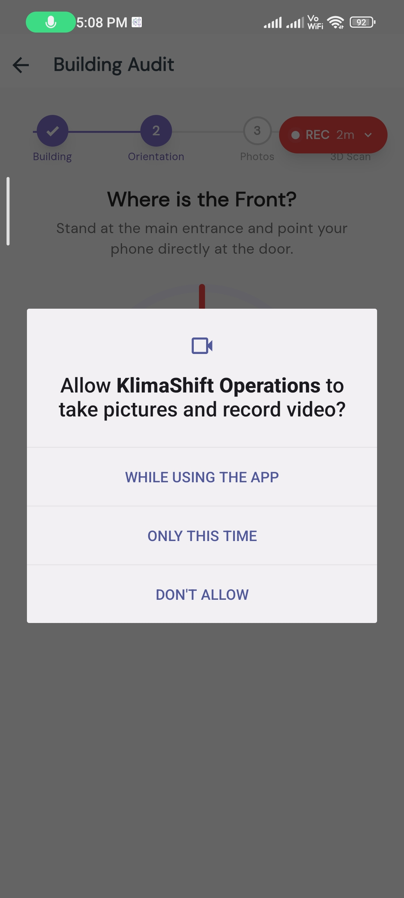
14.png — Grant camera permission
Step 15 Capture & Save Store Front Photo
Take a photo of the front of the store. After capturing, tap "Save Photo" to save.
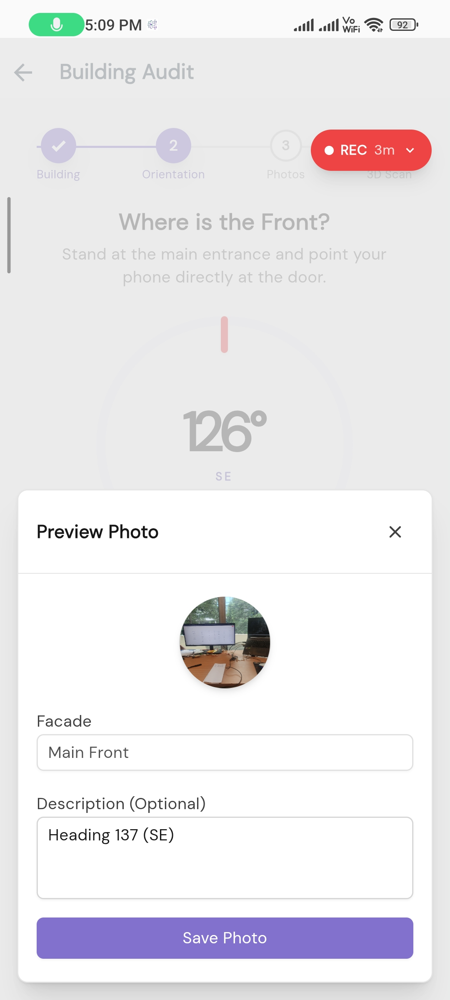
15.png — Tap on Save Photo
Step 16 Side Images (Optional)
If possible, take side images of the store from different angles. If not possible, tap "Skip" at the bottom to proceed.
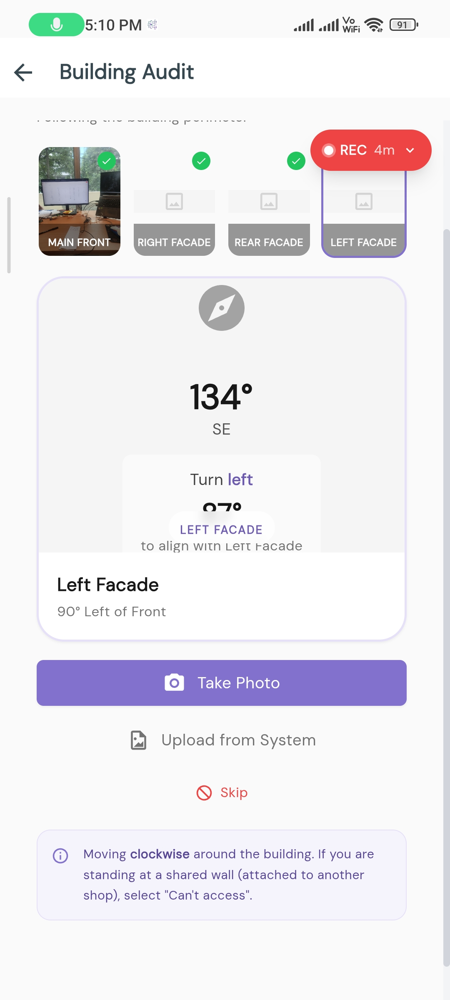
16.png — Tap Skip if side images not possible
D Part D — 3D Room Scan iPhone Required
iPhone Requirement
! 3D scanning requires an iPhone with LiDAR or ARKit support. Android phones cannot perform 3D scans. Use an iPhone 12 or newer for best results.
Goal: Take 3D scans of all rooms in the store (dining area, kitchen, store room, etc.). Each room must be scanned separately.
Step 17 Start 3D Scan
Tap "Start Scan" to begin the 3D scanning process. Follow the instructions shown on the device — you will need to slowly pan the phone around the room.
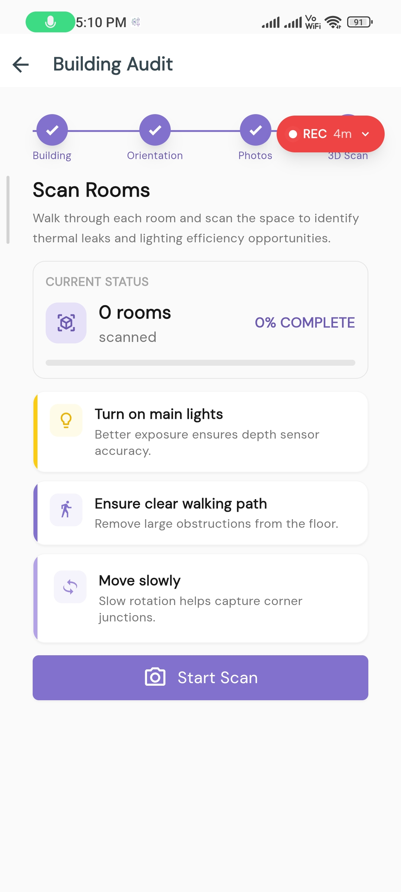
17.png — Tap on Start Scan
3D Scan Instructions
1 Hold the iPhone at chest height, facing the room.
2 Slowly pan the phone left to right, capturing the entire room.
3 Tilt the phone up and down to capture ceiling and floor.
4 Walk slowly around the room while scanning.
5 Avoid sudden movements — keep the scan smooth.
✓ The app will indicate when the scan is complete.
Step 18 Name the Room
Once the 3D scan is complete, name the room (e.g., "Dining Area", "Kitchen", "Store Room", "Office", etc.).
Step 19 Save and Continue
Tap "Save and Continue" to save the 3D scan for this room.
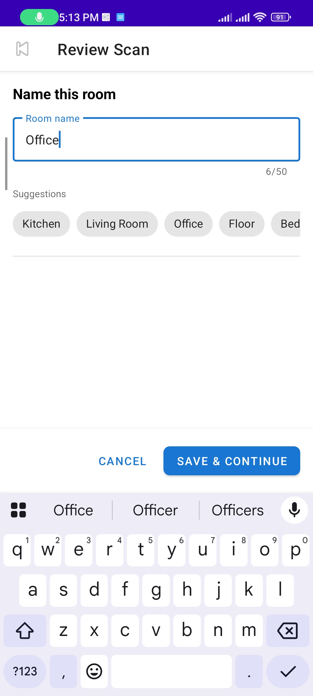
19.png — Tap on Save and Continue
Step 20 Add More Rooms (Repeat for All Rooms)
If there are more rooms to scan, tap "Add New Room" and repeat Steps 17–19 for each room. Take 3D scans of all rooms in the store.
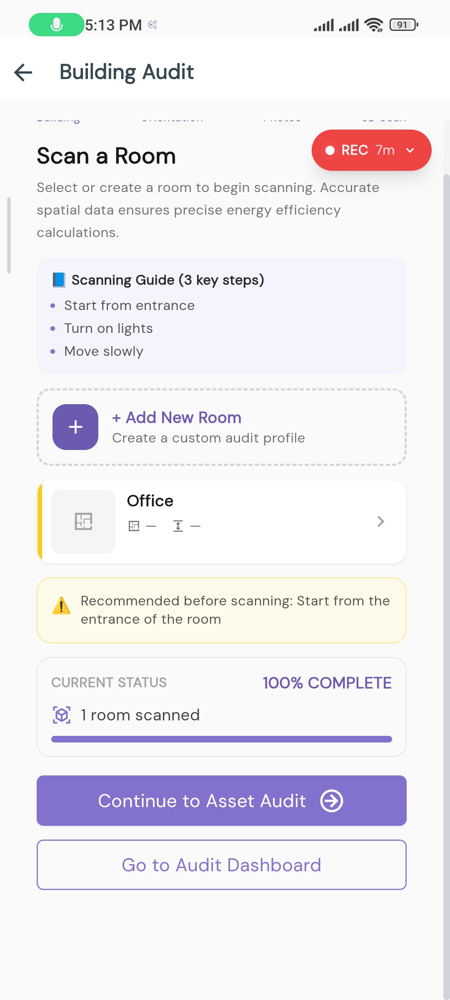
20.png — Tap Add New Room for each additional room
Important: Every room must be scanned separately. Do not skip any room — incomplete scans will affect the energy audit analysis.
E Part E — Asset Audit
Goal: Add and verify all electrical assets (equipment) in the store.
Continue Continue to Asset Audit
After completing all 3D scans, tap "Continue to Asset Audit" to proceed.
Step 21 Add New Asset
If assets are not already listed, tap "Add Asset" on the top right corner to add a new asset.
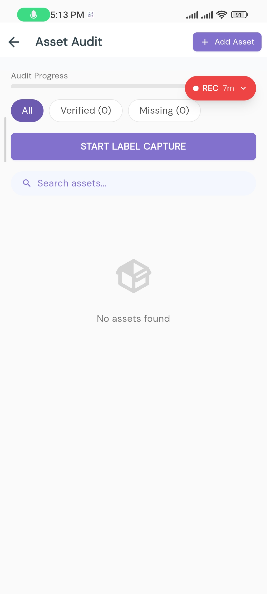
21.png — Tap on Add Asset (top right)
Step 22 Select Asset Type
Select the type of asset from the list (e.g., AC, Light, Fan, Refrigerator, etc.). Add assets one by one.
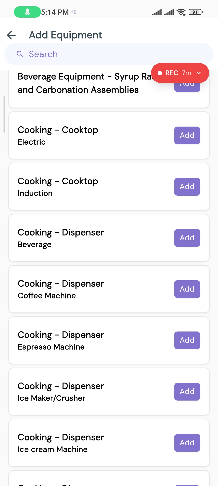
22.png — Select asset type
Step 23 Enter Basic Asset Details
Enter the basic details of the asset:
- Asset Name (e.g., "Cassette AC", "Exhaust Fan")
- Quantity
- Any other required fields
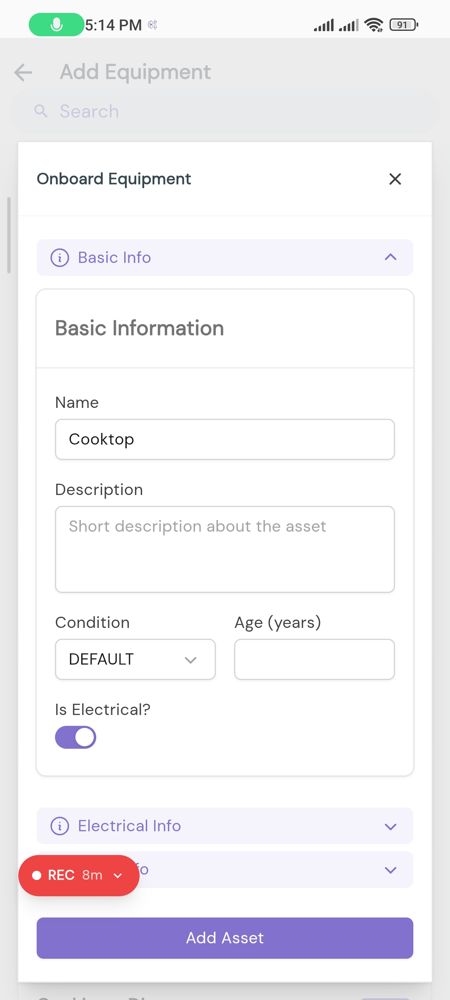
23.png — Enter asset details
Step 24 Enter Electrical Info & Add Asset
If electrical information is available (wattage, voltage, etc.), enter it. Then tap "Add Asset" to save.
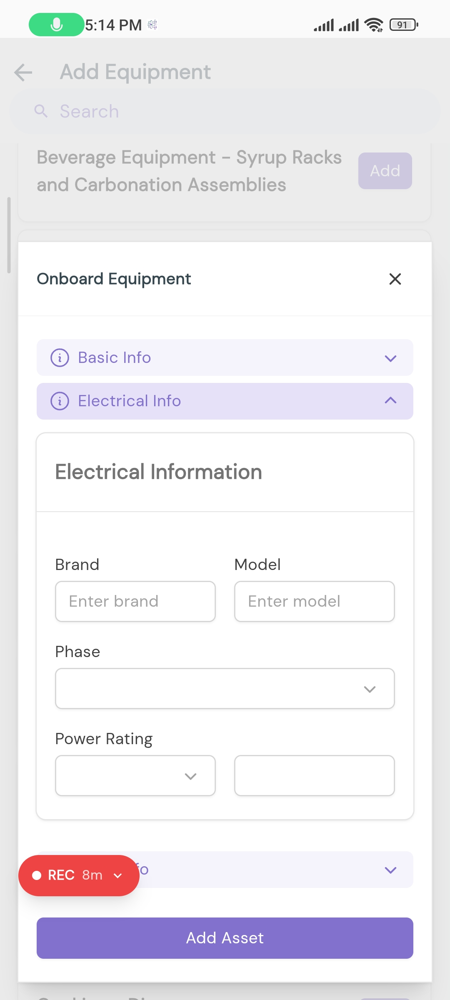
24.png — Enter electrical info, tap Add Asset
Step 25 Take Photo of Asset
Tap "Take Photo" to capture a photo of the asset.
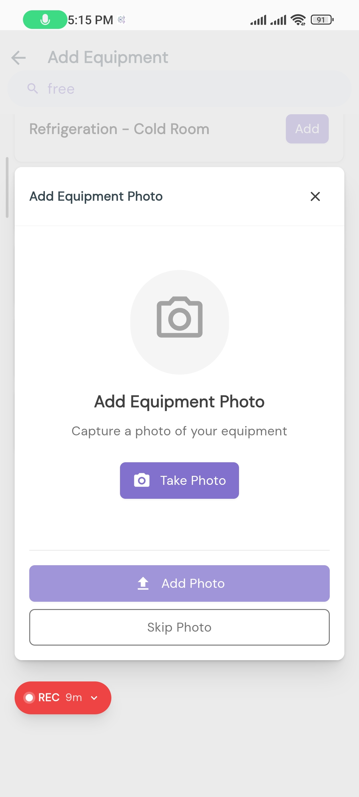
25.png — Tap on Take Photo
Step 26 Capture Photo
Tap "Take Picture" to capture the image.
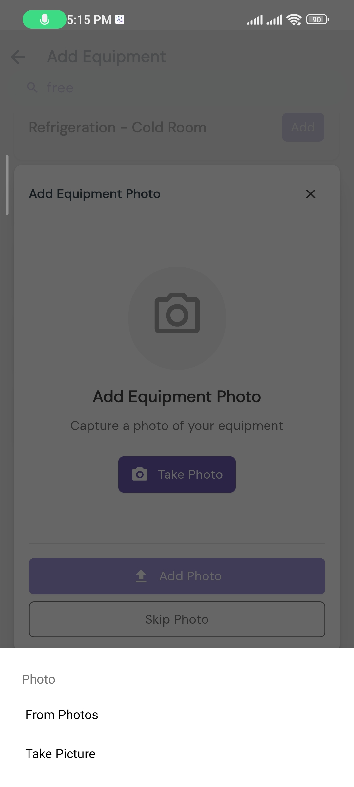
26.png — Tap on Take Picture
Step 27 Confirm Photo
Click the picture of the asset, then tap the correct/check mark symbol on the image to confirm.
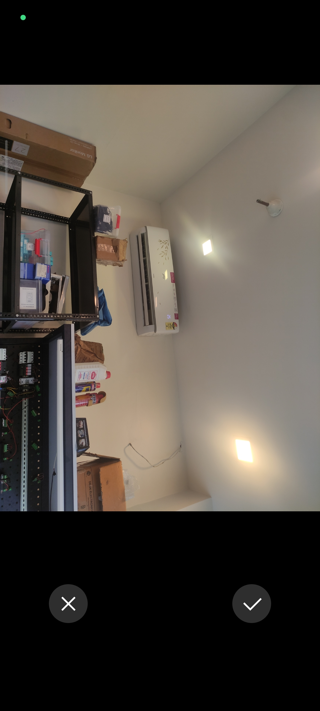
27.png — Tap check mark to confirm photo
Step 28 Add Photo to Asset
Tap "Add Photo" to attach the photo to the asset.
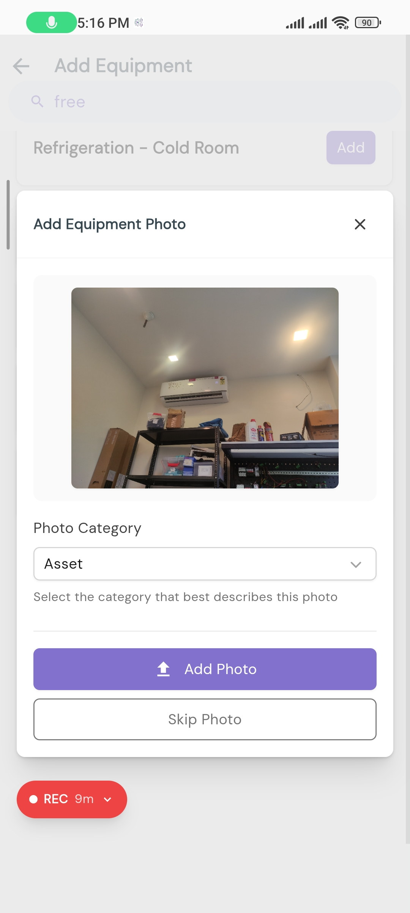
28.png — Tap on Add Photo
Step 29 Capture Additional Photos
After the asset is added, tap "Capture" on the asset card to add more photos (e.g., rating label, nameplate).
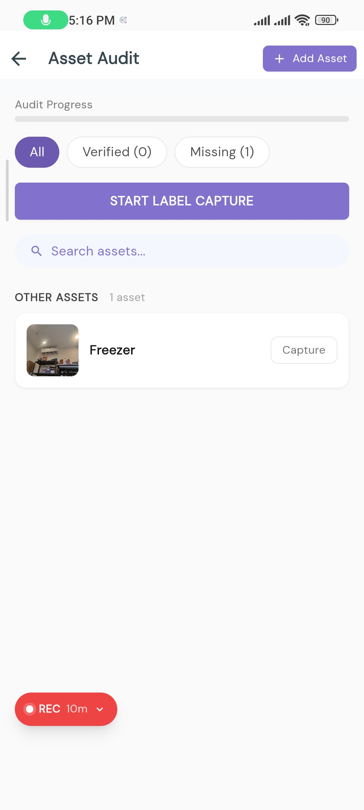
29.png — Tap on Capture for more photos
Step 30 More Photos
Tap "More Photos" to add additional photos.
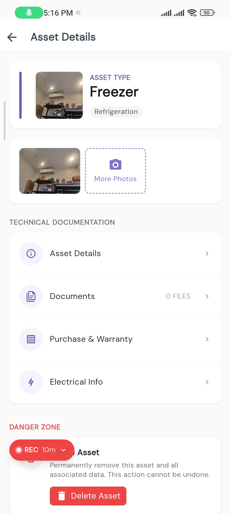
30.png — Tap on More Photos
Step 31 Take Photo of Rating Label
Tap the camera icon at the bottom right corner. Take a photo of the asset's electrical rating label (nameplate) if available.
Step 32 Upload Photos
After taking all photos, tap "Upload" to upload them.
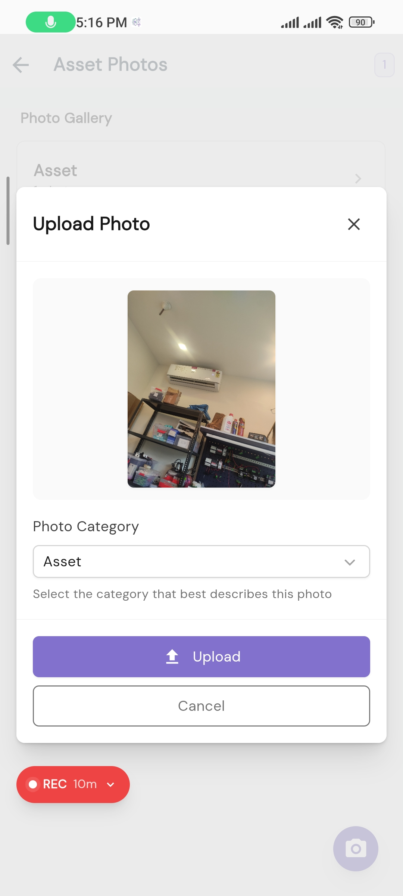
32.png — Tap on Upload
Step 33 Verify Uploaded Photos
You can now see all the uploaded photos for the asset. Verify they are clear and complete.
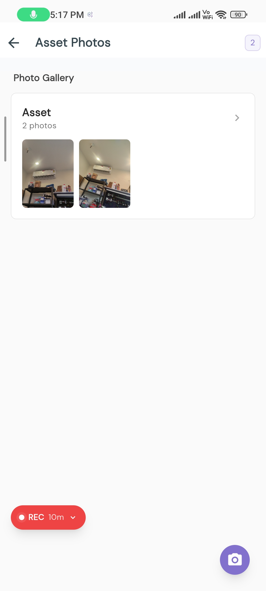
33.png — View all uploaded photos
Step 34 Verify Asset
Go back by tapping the back arrow on the top left corner. On the top right corner, you should see a green "Verified" label on the asset. Repeat Steps 21–33 for all assets.
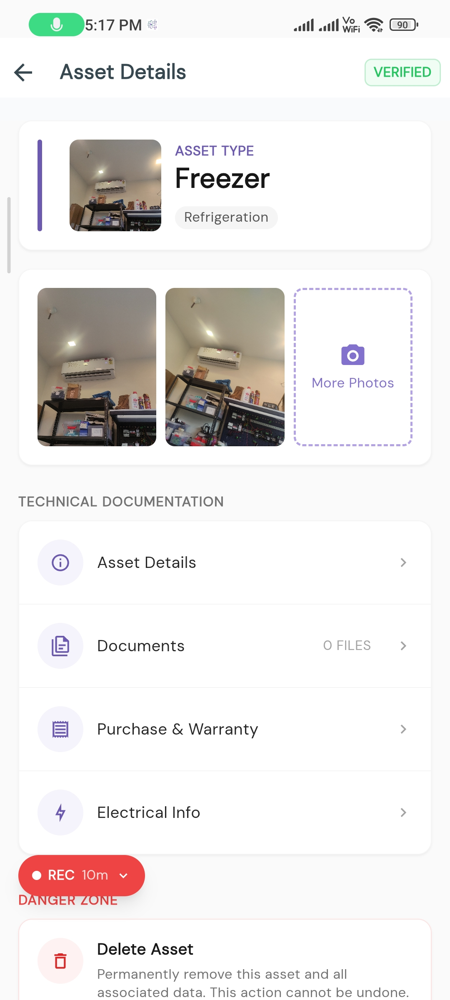
34.png — Green "Verified" label visible
Important: All assets must show "All assets are verified" before proceeding. If this is not shown, some assets are not verified — go back and complete them.
F Part F — Electrical Panel Audit
Goal: Add MDBs (Main Distribution Boards), configure MCBs, and map assets to MCBs.
Step 35 Continue to Electrical Panel
After all assets are verified, tap "Continue to Electrical Panel" to proceed.

35.png — Tap on Continue to Electrical Panel
Step 36 Add MDB
Tap "Add MDB" to create a new Main Distribution Board.
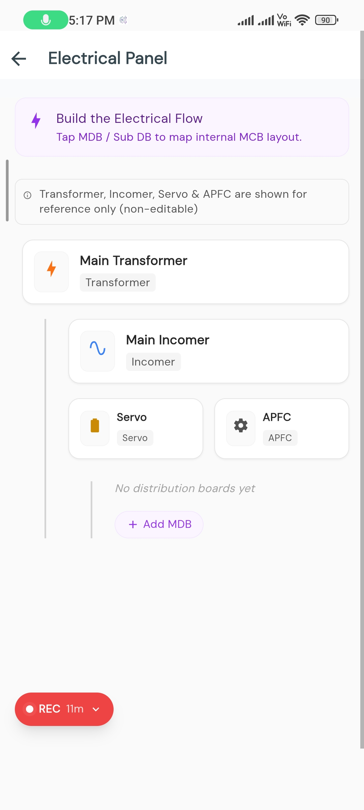
36.png — Tap on Add MDB
Step 37 Take Photo of Panel
Tap "Take Photo" to capture a photo of the electrical panel.
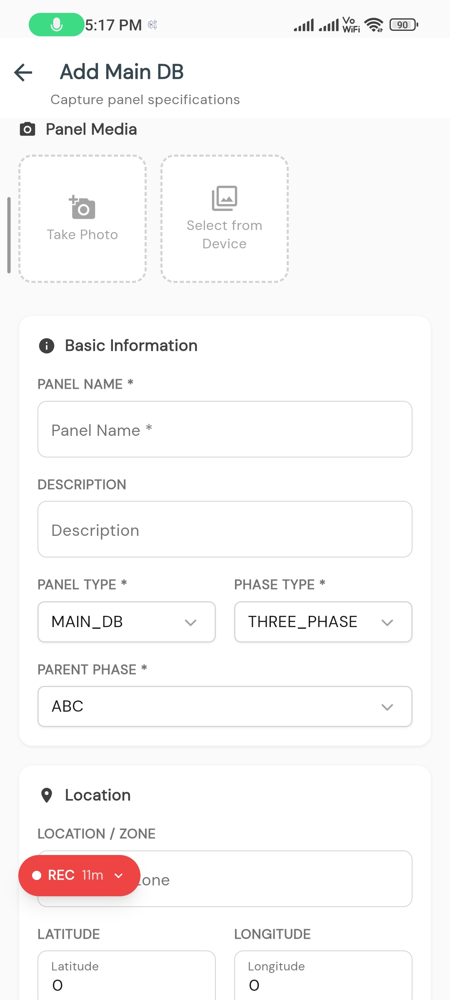
37.png — Tap on Take Photo
Step 38 Save Panel Photo
Capture the picture of the panel, then tap "Save Image".
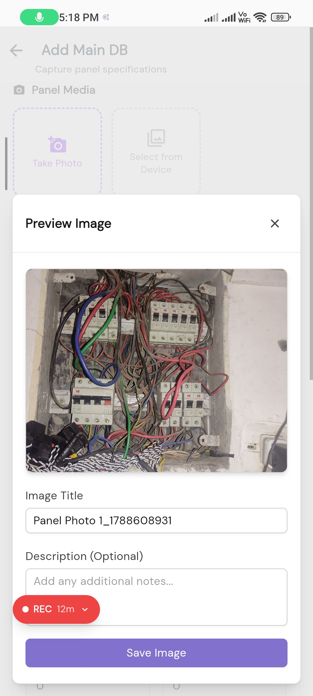
38.png — Tap on Save Image
Step 39 Enter Panel Details
Enter the basic details of the panel:
- Panel Name — Where is the panel located? (e.g., "Main DB - Ground Floor")
- Description — What equipment does this panel include? (e.g., "Lights, AC, Fans")
- Panel Type (MDB, SMDB, DB, etc.)
- Phase (Single Phase, Three Phase)
- Parent Phase (if applicable)
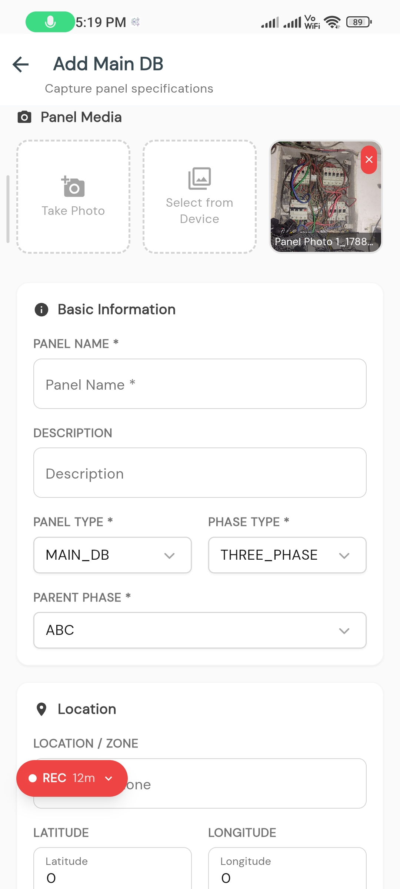
39.png — Enter panel details
Step 40 Set Location & Manufacturer Info
Scroll down to the Location section. Tap "Use Current Location" to auto-capture latitude and longitude. Also add:
- Manufacturer Name (if available)
- Model (if available)
- Installation Year (if available)
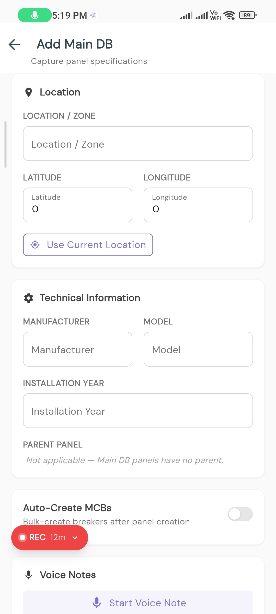
40.png — Set location and manufacturer info
Step 41 Create Panel
If needed, record a voice note by tapping "Start Voice Note". After recording, tap "Stop Voice Note". Then tap "Create Panel" to save.
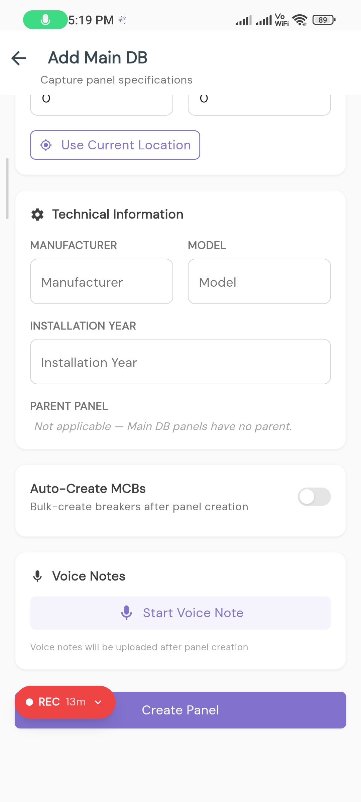
41.png — Tap on Create Panel
Step 42 Configure MCBs
Scroll down and turn on "Auto Create MCBs". Enter:
- MCB Count — Number of MCBs in the panel
- Ampere Rating — Rating of the MCBs
- MCB Type — Single Pole, Double Pole, Three Pole, or Four Pole
- Phase Connection — Phase configuration
Note: These settings can be modified later if there is a mix of different ratings and MCB types within the panel.
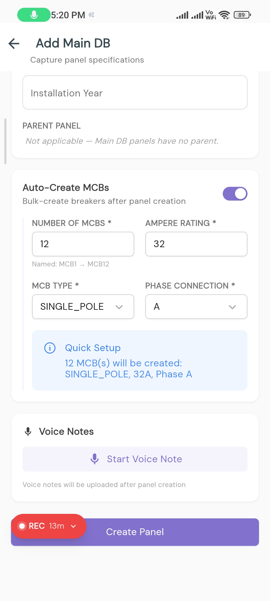
42.png — Configure MCB settings
Step 43 MCBs Created
The app will create the MCBs automatically. You will see the number of MCBs created.
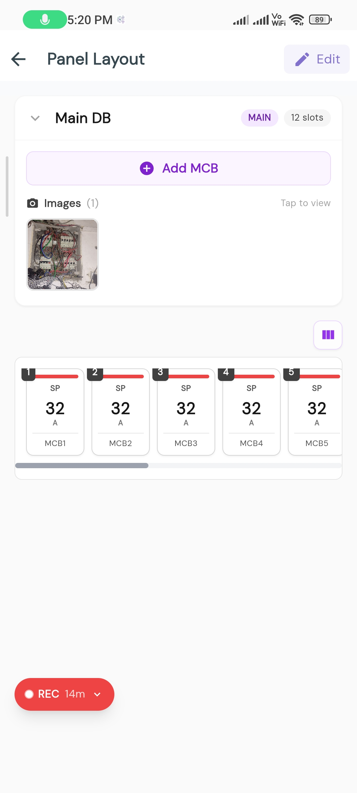
43.png — MCBs created in the panel
Step 44 Configure Each MCB — Find Phase Using Multimeter
Click on the 1st MCB. Options will pop up to configure:
- Pole Type: Single Pole (SP), Double Pole (DP), Three Pole (TP), Three Phase + Neutral (TPN)
- Phase: Red (A), Yellow (B), Blue (C)
- Rating: 6A, 10A, 16A, 20A, 32A, 64A, etc.
How to Find MCB Phase Using Multimeter
1 Set Multimeter: Switch the multimeter roller to 600V AC (~) — look for the "~" or "V~" symbol on the dial.
2 Connect Probes:
- Black probe → COM port on the multimeter
- Red probe → Voltage (V) port on the multimeter
3 Identify Known Phases: On the TPN (Three Phase + Neutral) distribution, identify the Red (A), Yellow (B), and Blue (C) phases. These are your reference points.
4 Test MCB Phase:
- Touch one probe end on the MCB's live connection (the wire going into the MCB)
- Touch other probe end on a known phase from TPN (e.g., Red/A phase)
5 Read the Multimeter:
- If reading shows ~420V → That is NOT the same phase (voltage difference between different phases)
- Keep the probe on the MCB, change the other probe to Phase B (Yellow)
- If reading shows ~0V → The MCB is on Phase B (Yellow)
✓ Summary:
- ~0V reading = Same phase (MCB is on this phase)
- ~420V reading = Different phase (MCB is NOT on this phase)
- Repeat for all MCBs to determine each one's phase
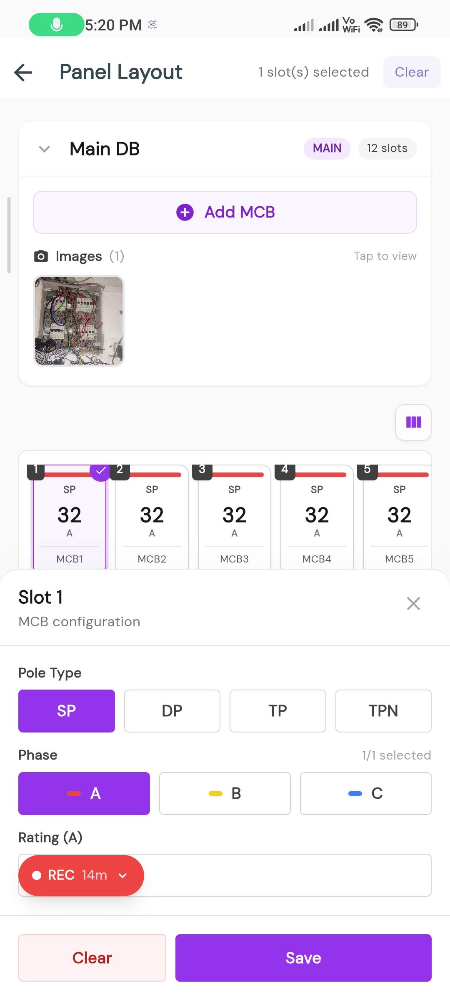
44.png — Configure each MCB with correct phase and rating
Safety Warning: Be extremely careful when using the multimeter near live electrical connections. Do not touch exposed wires with bare hands. Ensure the multimeter is set to the correct voltage range (600V AC). If unsure, consult a qualified electrician.
Step 45 Save Panel & Go Back
After configuring all MCBs, save the panel configuration. Tap the back arrow on the top left to go back. If there are more panels, create them using the same steps (Step 36–44). Once all panels are created, tap the back arrow again.
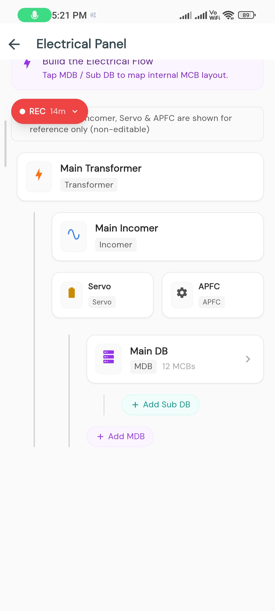
45.png — Tap back arrow when all panels done
G Part G — MCB Mapping
Goal: Map each MCB to the equipment it controls by physically switching MCBs on/off.
Step 46 Open MCB Mapping
Tap on "MCB Mapping" to start mapping MCBs to equipment.
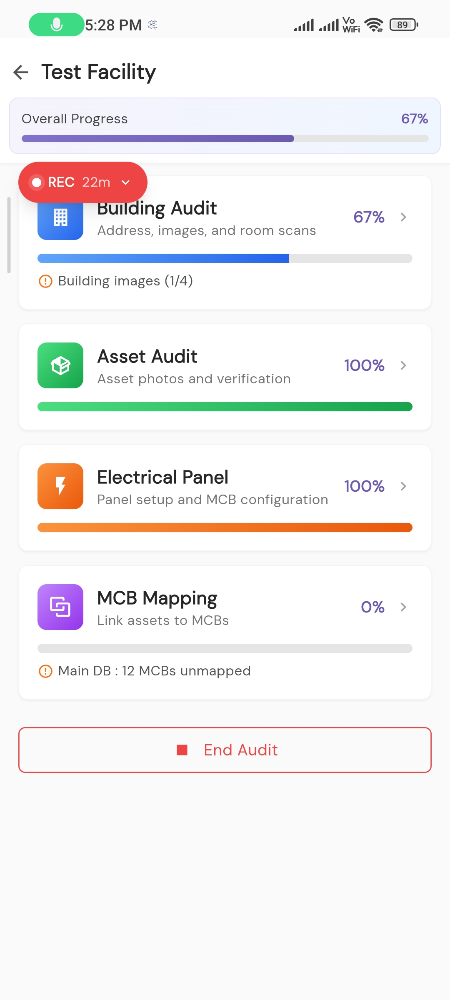
46.png — Tap on MCB Mapping
Step 47 Select Panel
Tap on the top panel (if there are more than one panel, start with the topmost panel).
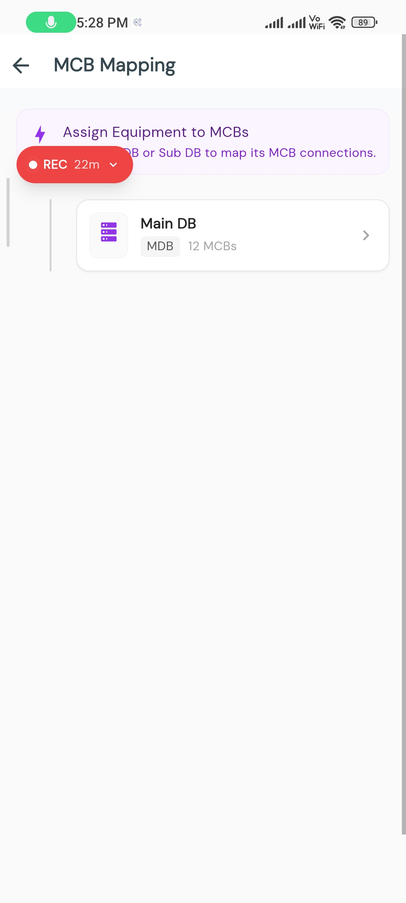
47.png — Tap on the panel
Step 48 Turn Off MCB Physically & Identify Equipment
Physically turn OFF MCB 1 on the panel. Then observe on site — what equipment turns off? Once you identify the equipment associated with that MCB, go to the app and tap on MCB1.
MCB Mapping Process
1 Physically go to the electrical panel and turn OFF MCB 1.
2 Walk through the store and observe what equipment has turned off (lights, AC, fans, etc.).
3 Note down all equipment that turned off.
✓ Go back to the app and map those assets to MCB 1.
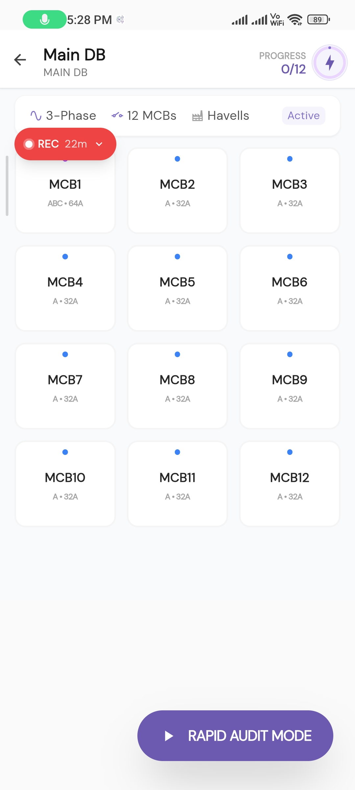
48.png — Tap on MCB1 in the app
Step 49 Add Assets to MCB
In the app, click on the assets that are associated with that MCB to add them. The assets will be linked to the MCB.
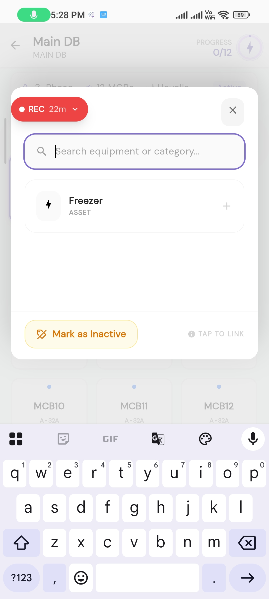
49.png — Click on assets to add them to MCB
Step 50 Repeat for All MCBs
Similarly, perform this task for all MCBs — turn off each MCB one by one, identify the equipment, and map them in the app.
Step 51 MCBs Marked as Mapped
Once MCBs are mapped, they will be marked as "Mapped" with a green indicator.
51.png — MCBs marked as Mapped
Step 52 Handle Spare MCBs
If there are MCBs with no equipment connected (spare MCBs), click on the MCB and tap "Mark as Inactive". Then continue further.
Step 53 Mark as Inactive
For spare MCBs, tap "Mark as Inactive" to skip them.
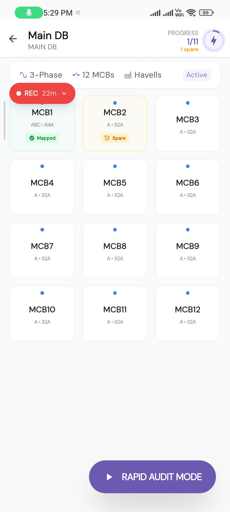
53.png — Tap Mark as Inactive for spare MCBs
Step 54 Complete Other Panels
Go back and similarly complete other panels if available. Repeat the MCB mapping process for all panels.
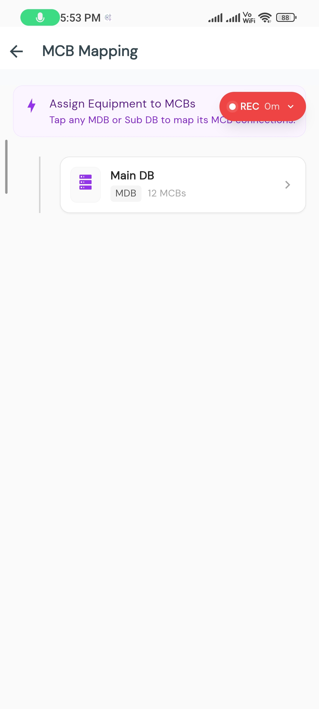
54.png — Complete mapping for all panels
H Part H — End Audit
Step 55 Go Back & End Audit
Tap the back arrow on the top left. Then tap "End Audit".
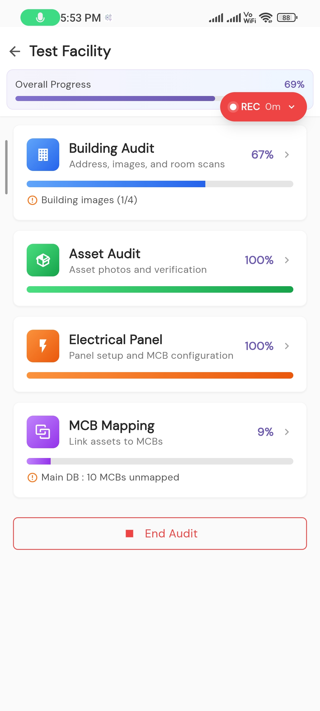
55.png — Tap on End Audit
Step 56 Confirm End Audit
Tap "Confirm End" to finalize and end the audit.
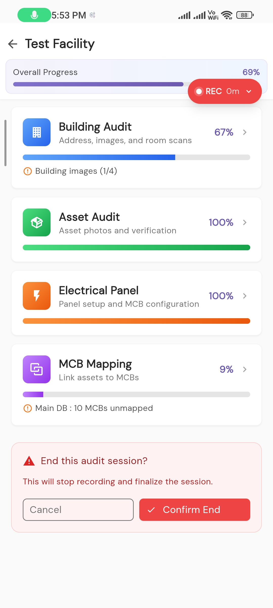
56.png — Tap on Confirm End
Audit Complete! The site audit process is now finished. All data (building details, 3D scans, assets, panel configurations, and MCB mappings) has been saved to the KlimaShift platform.
I Part I — Post-Audit: Meter Installation Planning
Goal: After completing the app audit, assess the physical site for energy meter installation. Check meter placement, CT mounting points, router connectivity, and measure all required distances.
Important: This section must be completed after the app audit is finished. All measurements should be noted in the Google Sheet or notepad for installation planning.
Step 57 Identify Meter Installation Location
Look around the site and identify a suitable location where the energy meter can be installed. Consider:
- Proximity to the electrical panel (for CT connections)
- Proximity to router/network hub (for communication)
- Availability of power socket for the meter
- Protection from weather, water, and physical damage
- Accessibility for maintenance and readings
Step 58 Measure Distance: Meter to Panel (CT Mounting Point)
Measure the approximate distance between:
- Meter Installation Place → Electrical Panel (where CTs will be mounted)
Tip: If the distance is more than 5 meters, you may need longer CT cables or a different meter placement strategy.
Step 59 Check Router & Network Hub Distance
Locate the router and network hub on site. Measure the approximate distance between:
- Meter Installation Place → Router/Network Hub
- Is there a power socket near the meter installation place?
- Is there a power socket near the router/network hub?
- Is there an Ethernet port or WiFi coverage at the meter location?
Step 60 Inspect Panel for CT Insertion Points
Open the electrical panel (with permission and safety precautions). Look at the panel and identify:
- Where CTs can be inserted — around the incoming mains cables
- Cable size — to select appropriate CT size
- Space availability — is there enough room to clamp CTs around the cables?
- Cable routing — how will CT cables run from panel to meter?
Step 61 Measure Distance: Meter to CT Incomer
Measure the approximate distance from:
- Meter Installation Place → CT Incomer Point (where CTs will be clamped on the panel)
Note: CT cables should not exceed recommended lengths. If the distance is too long, consider alternative meter placement or consult the technical team.
Checklist Post-Audit Measurements Summary
| # | Measurement | Distance (approx.) | Notes |
|---|---|---|---|
| 1 | Meter Place → Electrical Panel (CT Mount) | _____ meters | |
| 2 | Meter Place → Router/Network Hub | _____ meters | |
| 3 | Meter Place → CT Incomer Point | _____ meters | |
| 4 | Power Socket at Meter Place? | Yes / No | |
| 5 | Power Socket at Router/Hub? | Yes / No | |
| 6 | WiFi/Ethernet Available at Meter Place? | Yes / No | |
| 7 | CT Cable Length Required | _____ meters |
📋 Quick Reference — Audit Flow Summary
| Part | Steps | Description | Device |
|---|---|---|---|
| A | 1–8 | Client & Building Selection, Permissions | Phone |
| B | 9–12 | Building Details & Orientation | Phone |
| C | 13–16 | Store Front Photo | Phone |
| D | 17–20 | 3D Room Scan | iPhone |
| E | 21–34 | Asset Audit (Add & Verify Assets) | Phone |
| F | 35–45 | Electrical Panel Audit (MDB, MCB Config) | Phone + Multimeter |
| G | 46–54 | MCB Mapping (Switch MCBs, Map Assets) | Phone |
| H | 55–56 | End Audit | Phone |
| I | 57–61 | Post-Audit: Meter Installation Planning | Measuring Tape |
Equipment Needed:
- iPhone (12 or newer with LiDAR) — for 3D scanning
- Multimeter — for finding MCB phase
- Camera/Phone — for photos of assets and panels